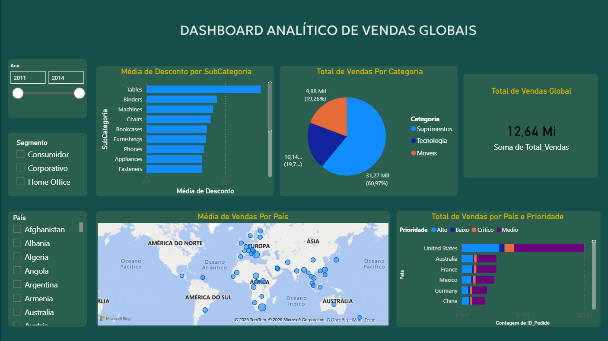

Dashboard Analítico de Vendas Globais
Análise de vendas por categoria, subcategoria e país, com filtros por ano/segmento e visão geográfica.
- KPIs: total de vendas, distribuição por categoria
- Visualizações: barras, mapa, segmentações
- Modelagem e medidas básicas em DAX